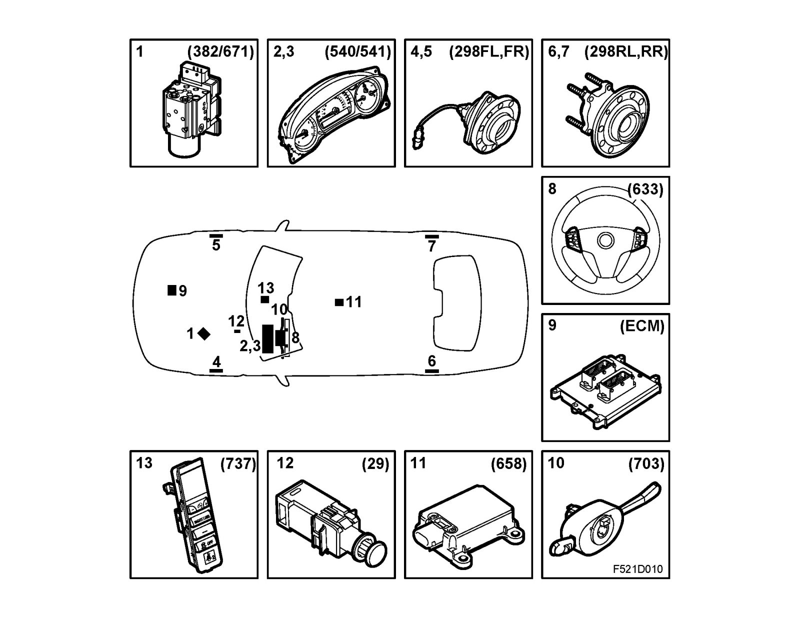

Main Components
Main components
1. TCS control module (382)/ESP control module (671)
^ control module
^ valve housing
^ pump
2. MIU (540)
^ ABS warning lamp
^ TCS or ESP indicator lamp
^ TCS OFF or ESP OFF warning lamp
^ Brake warning lamp (EBD fault)
3. SID (541c)
^ Warning message, EBD fault
^ Warning message, ABS fault
^ Warning message, TCS fault
^ Warning message, ESP fault
4. Wheel speed sensor (298), front left (298FL)
5. Wheel speed sensor (298), front right (298FR)
6. Wheel speed sensor (298), rear left (298RL)
7. Wheel speed sensor (298), rear right (298RR)
8. Steering wheel switch (633)
^ TCS or ESP ON/OFF
9. Trionic T8 control module (589b)/EDC16 control module (595)
10. Steering wheel angle integrated in CIM (657) - ESP only
11. Yaw sensor (658) - ESP only
12. Brake light switch (29)
13. Switch unit (737)